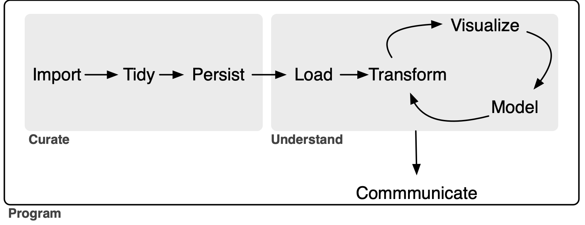

![]()

Data curation and the data science workflow
This note proposes and illustrates an extended version of the data science “whole game” offered by Wickham, Çetinkaya-Rundel, and Grolemund (2023).1 The extended version divides the data science whole game into two processes: Curate and Understand. Using the case of Australian end-of-day stock price data, I explain what the Curate process is and how it covers important elements of the data science whole game that are neglected in the original version. One feature of Curate is that it requires a set of specialist skills often not possessed by practitioners expert in the Understand phase. As such, I argue that a more effective division of labour might result from better delineating the two data science processes.
The goal of this note is to outline an extended version of the data science model “whole game” proposed in R for Data Science (Wickham, Çetinkaya-Rundel, and Grolemund 2023). The original “whole game” comprises three steps. It starts with an Import-and-tidy process (this comprises import and tidy steps), then an Understand process (this involves iteration between transform, visualize, and model steps), followed by a Communicate process.2
My extension of the “whole game”—depicted in Figure 1 below—gives the name Curate to the original Import-and-tidy process and adds a persist step to it. As a complement to the new persist step, I also add a load step to the Understand process. As will we see, this load step will not generally be an elaborate one, but its inclusion serves to better delineate the boundary between the Curate and Understand processes.
In this note, I focus on the data curation (Curate) process. My rationale for separating Curate from Understand is that I believe it clarifies certain best practices in the curation of data. In particular, I see a lot of merit in applying the notion of a service-level agreement to delineating roles and responsibilities in the preparation and analysis of data. As discussed below, my conception of Curate encompasses some tasks that are included in the transform step (part of the Understand process) in R for Data Science. The current version of this note uses daily data on Australian stock prices as an application.
While even a sole analyst who performs all three processes can benefit from thinking about Curate as a separate process from Understand, it is perhaps easiest to conceive of Curate and Understand as involving different individuals or organizational units of the “whole game” of a data analysis workflow.3
Inevitably, the distinction between tidy and transform can be difficult to draw. Nonetheless, I think it is useful to think of some “transform” steps as part of the process of data curation.4 For example, if the raw data express dates as strings (e.g., "25/12/2023"), there is merit in transforming these into parsed dates as part of the tidy step rather than confronting the issues associated with date formatting for each analysis conducted as part of the Understand process.
This note was written using Quarto and compiled with RStudio, an integrated development environment (IDE) for working with R. The source code for this note is available here and the latest PDF version is available here.
1 Possible data curation scenarios
In a university, a “data lab” might be responsible for curating datasets for research and teaching, with researchers and students serving as the clients. Notwithstanding the significance of data in a lot of research conducted in universities, my experience in business schools is that, even when they exist, teams that might perform this role often refuse to do so. As a result, almost all data curation is performed by researchers themselves, often at great cost and with little expertise.5
In principle, information vendors are in the business of data curation. Some vendors do an excellent job of data curation and this makes it relatively easy for researchers to work with their data. For example, CRSP has long been the gold standard for researchers requiring data on US stock prices. For me, working with CRSP data is mostly a matter of getting it into my PostgreSQL database using a script.6 Often, however, data vendors supply data in a way that requires significant additional data curation.
I imagine that larger quantitative hedge funds employ specialists to handle data curation tasks, with analysts and portfolio managers focusing on the tasks they are better suited to. No doubt there is iteration between data and IT specialists and those analysts and portfolio managers, as the output of the latter group needs to rigorously back-tested and put into production.
Research assistants might be hired by academic researchers to provide data curation services. In many cases, these research assistants will also do significant work from the Understand process, such as running regressions or other analyses. Even a solo analyst will be doing data curation, though the “client” will be the analyst herself.
I suspect that some of the principles I outline here will be useful in all of these scenarios.
2 The service-level agreement
It is perhaps helpful to think of dividing the data science workflow into processes with different teams being responsible for the different processes. From this perspective, the Curate team manufactures data that are delivered to the Understand team.7 While I won’t discuss transfer pricing (i.e., how much the Understand team needs to pay the Curate team for the data), we might consider the analogy of a service-level agreement between the two teams.
One template for a service-level agreement would specify that data from a particular source will be delivered to the Understand team with the following conditions:
- The data will be presented as a set of tables in a modern storage format.
- The division into tables will adhere to a pragmatic version of good database principles.
- The primary key of each table will be identified and validated.
- Each variable (column) of each table will be of the correct type.
- There will be no manual steps that cannot be reproduced.
- A process for updating the curated data will be established.
- The entire process will be documented in some way.
- Some process for version control of data will be maintained.
2.1 Storage format
In principle, the storage format should be a fairly minor detail determined by the needs of the Understand team. For example, if the Understand team works in Stata or Excel, then perhaps they will want the data in some kind of Stata format or as Excel files. However, I think it can be appropriate to push back on notions that data will be delivered in form that involves downgrading the data or otherwise compromises the process in a way that may ultimately add to the cost and complexity of the task for the Curate team. For example, “please send the final data as an Excel file attachment as a reply email” might be a request to be resisted because the process of converting to Excel can entail the degradation of data (e.g., time stamps or encoding of text).8 Instead it may be better to choose a more robust storage format and supply a script for turning that into a preferred format.
One storage format that I have used in the past would deliver data as tables in a (PostgreSQL) database. The Understand team could be given access data from a particular source organized as a schema in a database. Accessing the data in this form is easy for any modern software package. One virtue of this approach is that the data might be curated using, say, Python even though the client will analyse it using, say, Stata.9
2.2 Good database principles
I included the word “pragmatic” because I think it’s not necessary in most cases to get particularly fussy about database normalization. That said, it’s probably bad practice to succumb to requests for One Big Table that the Understand team might make. It is reasonable to impose some obligation to merge naturally distinct tables on the client Understand team.
2.3 Primary keys
The Curate team should communicate the primary key of each table to the Understand team.10 A table’s primary key is a set of variables that can be used to uniquely identify each row in that table. In general a primary key will have no missing values. Part of data curation will be confirming that a proposed primary key is in fact a valid primary key.
2.4 Data types
Each variable of each table should be of the correct type. For example, dates should be of type DATE, variables that only take integer values should be of INTEGER type.11 Date-times should generally be given with TIMESTAMP WITH TIME ZONE type. Logical columns should be supplied with type BOOLEAN.
Note that there is an interaction between this element of the service-level agreement and the storage format. If the data are supplied in a PostgreSQL database or as parquet files, then it is quite feasible to prescribe the data types of each variable. But if the storage format is Excel files (not recommended!) or CSV files, then it is difficult for the data curator to control how each variable is understood by the Understand team.12
In some cases, it may seem unduly prescriptive to specify the types in a particular way. For example, a logical variable can easily be represented as INTEGER type (0 for FALSE, 1 for TRUE). Even in such cases, I think there is merit in choosing the most logical type (no pun intended) because of the additional information it conveys about the data. For example, a logical type should be checked to ensure that it only takes two values (TRUE or FALSE) plus perhaps NULL and that this checking has occurred is conveyed by the encoding of that variable as BOOLEAN.
2.5 No manual steps
When data vendors are providing well-curated datasets, much about the curation process will be obscure to the user. This makes some sense, as the data curation process has elements of trade secrets. But often data will be supplied by vendors in an imperfect state and significant data curation will be performed by the Curate team working for or within the same organization as the Understand team.
Focusing on the case where the data curation process transforms an existing dataset—say, one purchased from an outside vendor—into a curated dataset in sense used here, there are a few ground rules regarding manual steps.
First, the original data files should not be modified in any way. If data are supplied as CSV files, then merely opening them in Excel and saving them can mutilate the original data.13 I have encountered people whose idea of data curation extended to opening the original files, saving them as Excel files, and then proceeding to manually edit those files. This approach leads to a completely unreproducible set of data files, which is problematic not only in a world in which reproducibility is starting to be expected, but also when a new version of the data will be supplied by the vendor in the future.
Second, any manual steps should be extensively documented and applied in a transparent automated fashion. For example, if a dataset on financial statement items of US firms contains errors that can be corrected by reviewing original SEC filings, then any corrections should be clearly documented in separate files with links to the original filings and explanations. And the corrections should be implemented through code, not manual steps.14 For example, there should be code that imports the original data and the corrections and applies the latter to the former to create the final dataset.
2.6 Documentation
The process of curating the data should be documented sufficiently well that someone else could perform the curation steps should the need arise. Often that need will arise when the vendor provides an updated dataset. Perhaps the best way to understand what I have in mind here is through a case study and I provide one in Section 3.
2.7 Update process
Part of the rationale for having a well-documented process with no manual steps is that it greatly facilitates updating the data when the data vendor or other data source provides updated data. In some cases, updating the data will entail little more than downloading the new raw data and running a pre-existing script on those data. In other cases, the data may change in significant ways, such as addition of new variables, renaming of existing ones, or reorganization of data into different tables.
As future changes may be difficult to predict, the analyst might be able to do little more than describe the anticipated update process if no major changes occur. If major changes do subsequently occur, it likely makes sense for the analyst handling the update to extensively document the changes needed to process the new data, especially if earlier versions of the data remain relevant (e.g., they have been used in published research).
2.8 Data version control
Welch (2019) argues that, to ensure that results can be reproduced, “the author should keep a private copy of the full data set with which the results were obtained.” This imposes a significant cost on the Understand team to maintain archives of datasets that may run to several gigabytes or more and it would seem much more efficient for these obligations to reside with the parties with the relevant expertise.
Unfortunately, even when data vendors provide curated datasets, they generally provide little in the way of version control. For example, there is no evidence that Wharton Research Data Services (WRDS), perhaps the largest data vendor in academic business research, provides any version control for its datasets, even though it should have much greater expertise for doing this than the users of its services.
Nonetheless, some notion of version control of data probably has a place in data curation, even if this is little more than archiving of various versions of data supplied to research teams.
3 A data curation case study: SIRCA ASX EOD data
As an application of the framework above, I will apply it to processing end-of-day (EOD) data on stock prices of shares traded on the Australian Stock Exchange (ASX) from SIRCA. The Securities Industry Research Centre of Asia-Pacific (SIRCA) is a standard source of financial data for academics at universities in Australia and New Zealand.
In this section, I use the packages listed below, plus the duckdb package.15 This note was written using Quarto and compiled with RStudio, an integrated development environment (IDE) for working with R. The source code for this note is available here.
library(tidyverse)
library(DBI)
library(arrow)
library(farr)The tables included with the SIRCA ASX EOD price collection are listed in Table 2. Each of these tables is supplied by SIRCA in the form of a compressed comma-separated values (CSV) file. For example, si_au_ref_names is supplied as si_au_ref_names.csv.gz.
The first step of our process will be to obtain these four CSV files and save them in a subdirectory named sirca on your computer. You should specify the location of that subdirectory by editing the following command, replacing with "~/Library/CloudStorage/Dropbox/raw_data/" with, say, "C:\Data\CSV Files", if that is where you have created this sirca directory on your computer.
Sys.setenv(RAW_DATA_DIR = "~/Dropbox/raw_data")Thus, the CSV files should be stored in the location that we will assign to the variable csv_dir.
csv_dir <- file.path(Sys.getenv("RAW_DATA_DIR"), "sirca")From Table 1, we can see that we have three files of fairly modest size and one large file (si_au_prc_daily.csv.gz). Note that the largest file will be about 10 times larger when decompressed. Because larger files present their own issues, we will start with si_au_ref_names, which presents some complexity while being fairly easy to work with.
| file_name | size | mtime |
|---|---|---|
| Delisted_MergerAndAcquisition-2025-08.csv.gz | 14.29 kB | 2025-09-11 02:13:35 |
| MergerAndAcquisition-2025-08.csv.gz | 18.95 kB | 2025-09-11 02:13:33 |
| si_au_prc_daily.csv.gz | 387.72 MB | 2025-09-11 01:28:13 |
| si_au_ref_names.csv.gz | 591.84 kB | 2025-09-11 01:27:10 |
| si_au_ref_trddays.csv.gz | 62.15 kB | 2025-09-11 01:25:48 |
| si_au_retn_mkt.csv.gz | 366.14 kB | 2025-09-11 01:26:32 |
| SIRCA EOD Data Dictionary.xlsx | 175.11 kB | 2025-09-11 01:36:05 |
| Table | Description |
|---|---|
si_au_ref_names |
Name histories and change dates for companies listed since 1 January 2000 |
si_au_prc_daily |
Complete daily price, volume and value histories, with issued share numbers |
si_au_retn_mkt |
Daily value- and equal-weighted whole-market returns |
si_au_ref_trddays |
Record of ASX trading dates since 1 January 2000 |
Here we choose parquet files as our target storage format. We will store our data in a sirca subdirectory in a different location from RAW_DATA_DIR specified above. You should specify the location DATA_DIR by editing the line of code below, much as you specified RAW_DATA_DIR above.16
Sys.setenv(DATA_DIR = "~/Dropbox/pq_data/")3.1 Importing si_au_ref_names
As discussed above, we start with si_au_ref_names. We first specify the name of the CSV file si_au_ref_names_csv, then quickly move on to reading the data using the read_csv() function. The displayed output from invoking read_csv() provides a good starting point for the next steps.
3.1.1 Setting data types
As can be seen, si_au_ref_names contains 20 columns that read_csv() parses as character columns and 9 columns that read_csv() parses as numeric columns.
si_au_ref_names_csv <- file.path(csv_dir, "si_au_ref_names.csv.gz")
si_au_ref_names <- read_csv(si_au_ref_names_csv, guess_max = 10000)Rows: 12025 Columns: 29
── Column specification ───────────────────────────────────────────────────
Delimiter: ","
chr (20): Gcode, CompanyTicker, SecurityTicker, SecurityType, Abreviate...
dbl (9): SeniorSecurity, ListDate_YMD, DelistDate_YMD, ListDate_DaysSi...
ℹ Use `spec()` to retrieve the full column specification for this data.
ℹ Specify the column types or set `show_col_types = FALSE` to quiet this message.The next step we take is to inspect the columns to determine whether refinement of types makes sense. In practice, we can infer appropriate types by looking at the data.
We start with three of the numeric columns. The first three appear to be integers, either based on casual inspection of the values displayed or inferences from the variable names (e.g., “days since” seems likely to be an integer).
si_au_ref_names |>
select_if(is.numeric) |>
select(1, 4:5)# A tibble: 12,025 × 3
SeniorSecurity ListDate_DaysSince DelistDate_DaysSince
<dbl> <dbl> <dbl>
1 1 43355 NA
2 1 42604 NA
3 1 44699 NA
4 1 42341 44060
5 1 45197 NA
# ℹ 12,020 more rowsWe can check that converting these variables to integers using as.integer() does not change any of their values.
si_au_ref_names |>
select_if(is.numeric) |>
select(1, 4:5) |>
summarize(across(everything(), \(x) all(x == as.integer(x), na.rm = TRUE)))# A tibble: 1 × 3
SeniorSecurity ListDate_DaysSince DelistDate_DaysSince
<lgl> <lgl> <lgl>
1 TRUE TRUE TRUE We can do the same for four of the remaining numeric columns.
si_au_ref_names |>
select_if(is.numeric) |>
select(6:9) |>
summarize(across(everything(), \(x) all(x == as.integer(x), na.rm = TRUE)))# A tibble: 1 × 4
RecordCount GICSIndustry SIRCAIndustryClassCode SIRCASectorCode
<lgl> <lgl> <lgl> <lgl>
1 TRUE TRUE TRUE TRUE The remaining numeric variables appear to be dates in ymd form read by read_csv() as numeric variables.
si_au_ref_names |>
select_if(is.numeric) |>
select(2:3)# A tibble: 12,025 × 2
ListDate_YMD DelistDate_YMD
<dbl> <dbl>
1 20180912 NA
2 20160822 NA
3 20220518 NA
4 20151203 20200817
5 20230928 NA
# ℹ 12,020 more rowsWe can convert these columns to dates with the ymd() function. In the following code snippet, we convert the numeric variables to the types we determined to be appropriate through the analysis above. Here this code just tests that nothing untoward happens; we will actually implement these type conversions in code below.
si_au_ref_names |>
select_if(is.numeric) |>
mutate(across(c(SeniorSecurity, ListDate_DaysSince, DelistDate_DaysSince,
RecordCount, GICSIndustry, SIRCAIndustryClassCode,
SIRCASectorCode), as.integer),
across(ends_with("_YMD"), ymd))# A tibble: 12,025 × 9
SeniorSecurity ListDate_YMD DelistDate_YMD ListDate_DaysSince
<int> <date> <date> <int>
1 1 2018-09-12 NA 43355
2 1 2016-08-22 NA 42604
3 1 2022-05-18 NA 44699
4 1 2015-12-03 2020-08-17 42341
5 1 2023-09-28 NA 45197
# ℹ 12,020 more rows
# ℹ 5 more variables: DelistDate_DaysSince <int>, RecordCount <int>,
# GICSIndustry <int>, SIRCAIndustryClassCode <int>,
# SIRCASectorCode <int>We can now move onto the 20 columns read as character vectors. The first five character vectors seem correctly identified as such.
si_au_ref_names |>
select_if(is.character) |>
select(1:5)# A tibble: 12,025 × 5
Gcode CompanyTicker SecurityTicker SecurityType AbreviatedSecurityDescr…¹
<chr> <chr> <chr> <chr> <chr>
1 14d1 14D 14D 01 ordinary
2 1ad1 1AD 1AD 01 ordinary
3 1ae1 1AE 1AE 01 ordinary
4 1al1 1AL 1AL 01 ordinary
5 1gov1 1GO 1GOV 07 etf units
# ℹ 12,020 more rows
# ℹ abbreviated name: ¹AbreviatedSecurityDescriptionThe same is true for character vectors 8 and 9 …
si_au_ref_names |>
select_if(is.character) |>
select(8:9) # A tibble: 12,025 × 2
FullCompanyName AbbrevCompanyName
<chr> <chr>
1 1414 DEGREES LIMITED 1414 DEGREES LIMITED
2 ADALTA LIMITED ADALTA LIMITED
3 AURORA ENERGY METALS LIMITED AURORAENERGYMETALS
4 ONEALL INTERNATIONAL LIMITED ONEALL IN LIMITED
5 VANECK 1-5 YEAR AUSTRALIAN GOVERNMENT BOND ETF VANECK 1-5 YR GOV
# ℹ 12,020 more rows… and character vectors 14 through 15 …
si_au_ref_names |>
select_if(is.character) |>
select(14:15) |>
filter(if_all(everything(), \(x) !is.na(x)))# A tibble: 23 × 2
CompanyDelistReasonComment AlteredLink
<chr> <chr>
1 converts to a trust by a one-for-one in specie issue in trus… [aqf] is o…
2 pursuant to scheme of arrangement with arrow pharmaceuticals… {awp2}[awp…
3 <18/02/2000>. Demerger. {bor1} (bor) boral limited split int… {bor1} (bo…
4 seven group holdings limited offers 170 cents plus 0.1116 {s… {bor1} (bo…
5 redomiciled to New Zealand after one for one share exchange … redomicile…
# ℹ 18 more rows… and character vectors 16 through 20.
si_au_ref_names |>
select_if(is.character) |>
select(16:20) |>
filter(if_all(everything(), \(x) !is.na(x)))# A tibble: 1 × 5
MS_CompanyID MS_SecurityID MS_CompanyID2 MS_SecurityID2 MA_Identifier
<chr> <chr> <chr> <chr> <chr>
1 0C00000O7P 0P000188J3 0C0000B4KQ 0P0001887N MHJ This leaves character columns 12 and 13. Focusing on the cases where neither is NA, we see that these columns appear to be lists of codes separated by semi-colons (;).
si_au_ref_names |>
select_if(is.character) |>
select(12:13) |>
filter(if_all(everything(), \(x) !is.na(x)))# A tibble: 494 × 2
CompanyDelistReasonCode CompanyRelatedGCode
<chr> <chr>
1 A ama2
2 S;R;M mlb2
3 A tai1
4 A wgr1
5 N aln2; agl1; agk1
# ℹ 489 more rowssi_au_ref_names |>
mutate(CompanyRelatedGCodes = CompanyRelatedGCode) |>
filter(CompanyRelatedGCode != "") |>
mutate(related_gcode = str_split(CompanyRelatedGCode, "[;\\s]+")) |>
select(Gcode, CompanyRelatedGCode, related_gcode) # A tibble: 497 × 3
Gcode CompanyRelatedGCode related_gcode
<chr> <chr> <list>
1 4wd1 ama2 <chr [1]>
2 5gn1 mlb2 <chr [1]>
3 a1c1 tai1 <chr [1]>
4 aag2 wgr1 <chr [1]>
5 aan2 aln2; agl1; agk1 <chr [3]>
# ℹ 492 more rowssi_au_ref_names |>
filter(CompanyRelatedGCode != "") |>
mutate(related_gcode = str_split(CompanyRelatedGCode, "[;\\s]+")) |>
unnest(related_gcode) |>
select(Gcode, CompanyRelatedGCode, related_gcode) # A tibble: 531 × 3
Gcode CompanyRelatedGCode related_gcode
<chr> <chr> <chr>
1 4wd1 ama2 ama2
2 5gn1 mlb2 mlb2
3 a1c1 tai1 tai1
4 aag2 wgr1 wgr1
5 aan2 aln2; agl1; agk1 aln2
# ℹ 526 more rows
Tip 1: Friends don’t let friends use Excel
From casual observation, it appears that valid Gcode values contain only lower case characters ([a-z] in regular expressions) or numbers ([0-9] in regular expressions). Are there any CompanyRelatedGCode values that contain other characters? It turns out that that there are.
si_au_ref_names |>
mutate(related_gcode = str_split(CompanyRelatedGCode, "[;\\s]+")) |>
unnest(related_gcode) |>
filter(str_detect(related_gcode, "[^a-z0-9]")) |>
select(Gcode, related_gcode, CompanyDelistReasonComment) # A tibble: 2 × 3
Gcode related_gcode CompanyDelistReasonComment
<chr> <chr> <chr>
1 ahx1 May-01 mayne nickless ltd
2 fhf1 May-01 mayne nickless limited What’s happened here? May-01 looks more like a date than a Gcode. This has all the hallmarks of someone having imported data into Microsoft Excel as part of their process. Microsoft Excel has a well-known tendency to mangle values that it aggressively interprets as dates. It seems likely that the Gcode for Mayne Nickless was may1 and Excel read this as May-01 (a date).17 Is it true that Gcode values contain only lower-case characters and numbers?
weird_gcodes <-
si_au_ref_names |>
filter(str_detect(Gcode, "[^a-z0-9]")) |>
distinct(Gcode) It seems not; some Gcodes have underscores (_):
str_flatten(pull(weird_gcodes), ", ")[1] "92e_1, apr_1, aug_1, aug_3, mar_2, may_1, nov_1, oct_1"To see why underscores are used, we can remove the underscore and save the Gcodes in a CSV file.18
weird_gcodes |>
mutate(Gcode = str_remove(Gcode, "_")) |>
write_csv("weird_gcodes.csv")Try opening weird_gcodes.csv in Excel. What do you see? (It may help to open weird_gcodes.csv in a text editor to see the original values.) To be frank, I struggle to see any reason why Excel should have any part in the data science workflow.19
We can examine CompanyDelistReasonCode in much the same way we did CompanyRelatedGCode. For reasons of brevity, I spare you the coding details and focus on the processed data, information about which is shown in Table 3.
One problem is evident from Table 3 and that is the presence of what appears to be junk in the CompanyDelistReasonCode field (e.g., 18 or R-apx). Another problem is evident only after looking that the documentation for si_au_ref_names and that is that even when the codes appear well-formed (e.g., N or C), we have no information about what these codes mean.
si_au_ref_names
| delist_code | n | delist_code | n | |
|---|---|---|---|---|
| N | 3933 | G | 16 | |
| C | 3646 | X | 13 | |
| R | 1047 | I | 11 | |
| A | 736 | T | 7 | |
| S | 598 | Z | 6 | |
| M | 412 | 18 | 5 | |
| F | 294 | 2 | 5 | |
| E | 291 | 9 | 5 | |
| Y | 187 | D | 5 | |
| W | 49 | P | 5 | |
| L | 32 | B | 4 | |
| H | 27 | p | 2 | |
| U-x | 27 | 0 | 1 | |
| O | 21 | E-x | 1 |
Given the issues apparent in both CompanyRelatedGCode and CompanyDelistReasonCode, I have elected to collect those, but keep them as simple character columns.
For those keeping track, we have four character columns left. It turns out that the name for each of these ends with Date. In the following, I focus on the observations with non-NA values in all of these columns.
si_au_ref_names |>
select_if(is.character) |>
select(ends_with("Date")) |>
filter(if_all(everything(), \(x) !is.na(x)))# A tibble: 5,400 × 4
ListDate DelistDate EarliestListDate LatestDelistDate
<chr> <chr> <chr> <chr>
1 03/12/2015 17/08/2020 03/12/2015 17/08/2020
2 14/06/2019 11/04/2023 14/06/2019 11/04/2023
3 02/03/2021 16/05/2023 02/03/2021 29/08/2023
4 17/05/2023 13/06/2023 02/03/2021 29/08/2023
5 14/06/2023 29/08/2023 02/03/2021 29/08/2023
# ℹ 5,395 more rowsFrom the above, it seems clear that we have dates in dmy form. It turns out that a couple of observations have the value "0/01/1900", which is not a valid date and I convert these to missing values using the code below.
si_au_ref_names |>
select(ends_with("Date")) |>
mutate(across(ends_with("Date"),
\(x) dmy(if_else(x == "0/01/1900", NA, x))))# A tibble: 12,025 × 4
ListDate DelistDate EarliestListDate LatestDelistDate
<date> <date> <date> <date>
1 2018-09-12 NA 2018-09-12 NA
2 2016-08-22 NA 2016-08-22 NA
3 2022-05-18 NA 2022-05-18 NA
4 2015-12-03 2020-08-17 2015-12-03 2020-08-17
5 2023-09-28 NA 2023-09-28 NA
# ℹ 12,020 more rowsAt this point, we have two versions of the variables related to listing dates (ListDate_YMD and ListDate) and to delisting dates (DelistDate_YMD and DelistDate) and perhaps it makes sense to keep just one of each. If the values in each of the pair is the same as the other, then there’s no reason to keep both.
Looking at ListDate_YMD and ListDate, we see that they are always equal and we could drop either one and keep the other.
si_au_ref_names |>
select(matches("ListDate")) |>
mutate(across(ends_with("Date"),
\(x) dmy(if_else(x == "0/01/1900", NA, x))),
across(ends_with("_YMD"), ymd)) |>
filter(ListDate_YMD != ListDate)# A tibble: 0 × 8
# ℹ 8 variables: ListDate_YMD <date>, DelistDate_YMD <date>,
# ListDate_DaysSince <dbl>, DelistDate_DaysSince <dbl>, ListDate <date>,
# DelistDate <date>, EarliestListDate <date>, LatestDelistDate <date>But there is one instance where DelistDate_YMD and DelistDate differ.
si_au_ref_names |>
select(matches("^DelistDate")) |>
mutate(across(ends_with("Date"),
\(x) dmy(if_else(x == "0/01/1900", NA, x))),
across(ends_with("_YMD"), ymd)) |>
filter(DelistDate_YMD != DelistDate)# A tibble: 1 × 3
DelistDate_YMD DelistDate_DaysSince DelistDate
<date> <dbl> <date>
1 2013-06-30 41455 2016-06-30Which one to choose? One approach would be to look to external sources to verify which date is correct. But for present purposes we will choose the one that keeps our data internally consistent. Specifically, we should choose whichever of DelistDate_YMD and DelistDate that is consistent with DelistDate_DaysSince.
Looking for other rows where DelistDate_DaysSince == 45051, we see that that value is elsewhere consistent with the value in DelistDate, so here I choose to drop the _YMD variables.
si_au_ref_names |>
select(Gcode, starts_with("DelistDate")) |>
filter(DelistDate_DaysSince == 45051)# A tibble: 1 × 4
Gcode DelistDate_YMD DelistDate_DaysSince DelistDate
<chr> <dbl> <dbl> <chr>
1 iesg1 20230505 45051 05/05/2023Putting all the pieces above we have the following:
si_au_ref_names <-
read_csv(si_au_ref_names_csv, guess_max = Inf,
show_col_types = FALSE) |>
mutate(across(c(SeniorSecurity, ListDate_DaysSince, DelistDate_DaysSince,
RecordCount, GICSIndustry, SIRCAIndustryClassCode,
SIRCASectorCode), as.integer),
across(ends_with("Date"),
\(x) dmy(if_else(x == "0/01/1900", NA, x)))) |>
select(-ends_with("_YMD"))3.1.2 Identifying the primary key
Before considering possible primary keys, we first determine if there are any duplicate rows. When there are duplicate rows, no possible combination of columns will work as a primary key.
The following function returns any rows that are duplicated in a dataset.
get_dupes <- function(df, count_var = "count") {
df |>
count(pick(everything()), name = count_var) |>
filter(.data[[count_var]] > 1)
}Applying this function to si_au_ref_names, we see that we have one row that appears twice in the dataset.
si_au_ref_names |>
get_dupes() |>
select(Gcode, SecurityTicker, ListDate, count)# A tibble: 0 × 4
# ℹ 4 variables: Gcode <chr>, SecurityTicker <chr>, ListDate <date>,
# count <int>To address this, we will simply use the distinct() function.
Moving on to consider potential primary keys, we see immediately that (Gcode, SecurityTicker) is not a valid primary key. As seen in the output below, a given (Gcode, SecurityTicker) combination can appear as many as seven times in the data.
si_au_ref_names |>
distinct() |>
count(Gcode, SecurityTicker, name = "num_rows") |>
count(num_rows)# A tibble: 7 × 2
num_rows n
<int> <int>
1 1 6345
2 2 1719
3 3 469
4 4 137
5 5 44
6 6 10
7 7 1Looking across the columns, we see that (Gcode, SecurityTicker, ListDate) almost works, as we have just one case where (Gcode, SecurityTicker, ListDate) fails to identify a single row. In this particular case, it seems that we have differences only in GICSIndustry and SIRCAIndustryClassCode. In one row, these variables are missing; in the other there are values.
si_au_ref_names |>
distinct() |>
group_by(Gcode, SecurityTicker, ListDate) |>
filter(n() > 1) |>
ungroup() |>
arrange(Gcode, SecurityTicker, ListDate) |>
select(Gcode, SecurityTicker, ListDate, GICSIndustry, SIRCAIndustryClassCode)# A tibble: 0 × 5
# ℹ 5 variables: Gcode <chr>, SecurityTicker <chr>, ListDate <date>,
# GICSIndustry <int>, SIRCAIndustryClassCode <int>If we take the row with non-NA values for GICSIndustry and SIRCAIndustryClassCode to be the correct one, then we should delete the other row.
si_au_ref_names |>
filter(Gcode == "rgwb1") |>
select(Gcode, GICSIndustry)# A tibble: 1 × 2
Gcode GICSIndustry
<chr> <int>
1 rgwb1 99999999It turns out that these are the only two rows where Gcode == "rgwb1", so if we eliminate the row with NA value in GICSIndustry we should have it that (Gcode, SecurityTicker, ListDate) uniquely identifies each row.
si_au_ref_names |>
distinct() |>
filter(!(Gcode == "rgwb1" & is.na(GICSIndustry))) |>
count(Gcode, SecurityTicker, ListDate, name = "num_rows") |>
count(num_rows)# A tibble: 1 × 2
num_rows n
<int> <int>
1 1 12025To confirm that (Gcode, SecurityTicker, ListDate) is a valid primary key for our filtered si_au_ref_names, we also need to check that there are no NA values in any of these fields, which the following code confirms.
si_au_ref_names |>
distinct() |>
filter(!(Gcode == "rgwb1" & is.na(GICSIndustry))) |>
summarize(across(c(Gcode, SecurityTicker, ListDate),
\(x) all(!is.na(x))))# A tibble: 1 × 3
Gcode SecurityTicker ListDate
<lgl> <lgl> <lgl>
1 TRUE TRUE TRUE 3.1.3 Writing the parquet file
So, we can put the reading of raw data, the conversion of data types, and the filters needed to have a valid primary key together. But we have one final adjustment to make and that is to convert all variable names to lower case, as we will see later that the variable names embedded in si_au_prc_daily.csv.gz are all lower case (e.g., gcode), so we probably make our lives easier my converting our variables here to lower case (e.g., so we can join on gcode without worrying about slight differences in variable names).
With that final adjustment, we can then write to a parquet file, as we do here. We will use the environment variable DATA_DIR that you set above to specify the location.
pq_dir <- file.path(Sys.getenv("DATA_DIR"), "sirca")
if (!dir.exists(pq_dir)) dir.create(pq_dir)
si_au_ref_names <-
read_csv(si_au_ref_names_csv, show_col_types = FALSE) |>
mutate(across(c(SeniorSecurity, ListDate_DaysSince, DelistDate_DaysSince,
RecordCount, GICSIndustry, SIRCAIndustryClassCode,
SIRCASectorCode), as.integer),
across(ends_with("Date"),
\(x) dmy(if_else(x == "0/01/1900", NA, x)))) |>
select(-ends_with("_YMD")) |>
distinct() |>
filter(!(Gcode == "rgwb1" & is.na(GICSIndustry))) |>
rename_with(str_to_lower) |>
write_parquet(sink = file.path(pq_dir, "si_au_ref_names.parquet")) |>
system_time()Warning: One or more parsing issues, call `problems()` on your data frame for
details, e.g.:
dat <- vroom(...)
problems(dat) user system elapsed
0.064 0.012 0.064 3.2 Importing si_au_ref_trddays
A similar process to that used for si_au_ref_names can be applied to si_au_ref_trddays. However, si_au_ref_trddays is a much simpler file and we conclude that the types of the five columns can be specified using col_types = "ciDii", where c means character, i means integer, and D means date.20
si_au_ref_trddays_csv <- file.path(csv_dir, "si_au_ref_trddays.csv.gz")
si_au_ref_trddays <-
read_csv(si_au_ref_trddays_csv, col_types = "ciDii") |>
mutate(dateymd = ymd(dateymd))We can easily confirm that date is a valid primary key:
si_au_ref_trddays |>
count(date, name = "num_rows") |>
count(num_rows)# A tibble: 1 × 2
num_rows n
<int> <int>
1 1 6326si_au_ref_trddays |>
summarize(across(date, \(x) all(!is.na(x))))# A tibble: 1 × 1
date
<lgl>
1 TRUE We can also confirm that we don’t need dateymd, as it contains the same information as date.
si_au_ref_trddays |>
filter(dateymd != date) |>
count() |>
pull()[1] 0We can specify - in col_types to omit dateymd when we read the data. Since date will be our primary key, we put that column first using the relocate() function.
si_au_ref_trddays <-
read_csv(si_au_ref_trddays_csv, col_types = "-iDii") |>
relocate(date)We also confirm that dayssince simply represents the number of dates since 1899-12-30.
si_au_ref_trddays |>
mutate(some_date = date - dayssince) |>
count(some_date)# A tibble: 1 × 2
some_date n
<date> <int>
1 1899-12-30 6326We can also confirm that weekday represents the day of the week in the US system that starts the week on Sunday.21
si_au_ref_trddays |>
mutate(
weekday_calc = wday(date),
wday = wday(date, label = TRUE)
) |>
count(weekday, weekday_calc, wday)# A tibble: 5 × 4
weekday weekday_calc wday n
<int> <dbl> <ord> <int>
1 2 2 Mon 1215
2 3 3 Tue 1278
3 4 4 Wed 1285
4 5 5 Thu 1285
5 6 6 Fri 1263si_au_ref_trddays <-
read_csv(si_au_ref_trddays_csv,
col_types = "-iDii") |>
relocate(date) |>
write_parquet(sink = file.path(pq_dir, "si_au_ref_trddays.parquet")) |>
system_time() user system elapsed
0.011 0.003 0.012 3.3 Importing si_au_retn_mkt
While I omit the details here, I did confirm that much of what we saw with si_au_ref_trddays applies to si_au_retn_mkt:
Dateis a valid primary keyDateYMDis redundantDaysSincerepresents the number of days since1899-12-30
Again I convert all column names to lower case so that date is a common field across si_au_ref_trddays, si_au_retn_mkt, and si_au_prc_daily.
si_au_retn_mkt_csv <- file.path(csv_dir, "si_au_retn_mkt.csv.gz")
si_au_retn_mkt <-
read_csv(si_au_retn_mkt_csv,
col_types = "-iDdddddd",
locale = locale(date_format = "%d/%m/%Y"),
name_repair = str_to_lower) |>
relocate(date) |>
write_parquet(sink = file.path(pq_dir, "si_au_retn_mkt.parquet")) |>
system_time() user system elapsed
0.011 0.004 0.009 3.4 Importing si_au_prc_daily
By this point, we should be getting the hang of the workflow. I now move on to the largest file in the set, si_au_prc_daily.csv.gz. I start by identifying the CSV source and the parquet destination.
si_au_prc_daily_csv <- file.path(csv_dir, "si_au_prc_daily.csv.gz")
si_au_prc_daily_pq <- file.path(pq_dir, "si_au_prc_daily.parquet")Using a process similar to that above, one can identify those columns needing special handling in the import process. Note that I specify guess_max = 1e6 because the default value for guess_max reads too few rows to infer the types of some variables that are mostly NA.
si_au_prc_daily <-
read_csv(si_au_prc_daily_csv,
guess_max = 1e6,
show_col_types = FALSE) |>
mutate(dateymd = ymd(dateymd),
date = dmy(date),
weekday = as.integer(weekday),
monthend = as.logical(monthend),
seniorsecurity = as.integer(seniorsecurity)) |>
system_time() user system elapsed
71.659 7.355 44.749 Again we need to choose between date and dateymd, which are almost always equal.
si_au_prc_daily |>
filter(date != dateymd) |>
select(gcode, securityticker, date, dateymd, dayssince)# A tibble: 0 × 5
# ℹ 5 variables: gcode <chr>, securityticker <chr>, date <date>,
# dateymd <date>, dayssince <dbl>Again dateymd seems to be the one of the two that is consistent with dayssince.
si_au_prc_daily |>
filter(dayssince == 40682) |>
count(date)# A tibble: 1 × 2
date n
<date> <int>
1 2011-05-19 1513si_au_prc_daily |>
filter(dayssince == 40682) |>
count(dateymd)# A tibble: 1 × 2
dateymd n
<date> <int>
1 2011-05-19 1513So in saving to parquet, I keep dateymd, but rename it to date for consistency across datasets.
si_au_prc_daily |>
select(-date) |>
rename(date = dateymd) |>
write_parquet(sink = si_au_prc_daily_pq) |>
system.time()One issue with the code above is that it is quite slow and requires the full dataset to be loaded in RAM. Given that si_au_prc_daily occupies 4.31 GB of RAM when loaded, this can be a problem if you have modest computing resources.
An alternative approach would be to use DuckDB’s facility for reading CSV files and writing to parquet files. The small export_parquet() function accepts a remote data frame in a DuckDB connection and writes it to parquet.
export_parquet <- function(df, file) {
db <- df[["src"]][["con"]]
df <- dplyr::collapse(df)
sql <- paste0("COPY (", dbplyr::remote_query(df),
") TO '", file, "'")
DBI::dbExecute(db, sql)
invisible(df)
}The following code creates a DuckDB connection, then uses that connection to read the CSV file and then calls export_parquet() to write it the data to a parquet file. This is an order of magnitude faster than the read_csv() code above, yet seems to make no demands on RAM.
db <- dbConnect(duckdb::duckdb())
si_au_prc_daily <-
tbl(db, str_c("read_csv('", si_au_prc_daily_csv, "',
DateFormat = '%Y%m%d',
types = {'dateymd': 'DATE',
'dayssince': 'INTEGER',
'weekday': 'INTEGER',
'monthend': 'BOOLEAN',
'seniorsecurity': 'INTEGER'})")) |>
compute() |>
select(-date) |>
rename(date = dateymd) |>
export_parquet(file = si_au_prc_daily_pq) |>
system_time() user system elapsed
32.362 8.753 9.679 3.4.1 Identifying the primary key
Obviously gcode and date are going to be part of any primary key, but one can quickly deduce from the documentation supplied by SIRCA that a single gcode can be associated with multiple securities at one time and that seniorsecurity is used to distinguish these. This suggests (gcode, date, seniorsecurity) as a candidate primary key, so let’s check this.
First, does each combination of (gcode, date, seniorsecurity) identify a single row?
si_au_prc_daily |>
count(gcode, date, seniorsecurity, name = "num_rows") |>
count(num_rows) |>
collect()# A tibble: 1 × 2
num_rows n
<dbl> <dbl>
1 1 9050690Second, are there no NA values in the (gcode, date, seniorsecurity) combination?
si_au_prc_daily |>
summarize(across(c(gcode, date, seniorsecurity),
\(x) all(!is.na(x), na.rm = TRUE))) |>
collect()# A tibble: 1 × 3
gcode date seniorsecurity
<lgl> <lgl> <lgl>
1 TRUE TRUE TRUE One thing to note here is that I checked the primary key using the DuckDB version of the data rather than the dplyr data frame (or tibble). One reason for this is that the code was much faster using the DuckDB version.
Now that I am done with the DuckDB connection, I can disconnect from it.
dbDisconnect(db)3.5 The final script
I organized the code above (e.g., removed redundant elements) and placed it in a script here. With the raw data in RAW_DATA_DIR and the necessary packages installed, I can create parquet data files by simply running the following code:22
source_url <- str_c("https://raw.githubusercontent.com/",
"iangow/notes/main/import_sirca.R")
Sys.setenv(RAW_DATA_DIR = "~/Dropbox/raw_data")
t <- tempdir()
Sys.setenv(DATA_DIR = t)
source(source_url) |> system.time() user system elapsed
23.908 1.340 5.426 4 The service-level agreement revisited
I now return to our service-level agreement (SLA) to take stock of where we are after the above. Given that much of the focus above was on data types, I do not revisit that here and instead focus on those elements of the SLA that I did not address above.
4.1 Storage format
We have chosen to use parquet files for our output. Table 4 provides some data on the parquet files we have produced for our hypothetical client (the Understand team). Assuming that the client is a group of colleagues at an institution with access to SIRCA, we (the Curate team) might just send a link to the Dropbox folder where we have stored the parquet files.
| file_name | size |
|---|---|
| si_au_prc_daily.parquet | 517.71 MB |
| si_au_ref_names.parquet | 838.82 kB |
| si_au_ref_trddays.parquet | 86.75 kB |
| si_au_retn_mkt.parquet | 439.38 kB |
4.2 Primary keys
Table 5 provides a summary of our analysis above of primary keys.
| Table | Primary key |
|---|---|
si_au_ref_names |
gcode, securityticker, listdate |
si_au_prc_daily |
gcode, date, seniorsecurity |
si_au_retn_mkt |
date |
si_au_ref_trddays |
date |
4.3 Good database principles
In general, I think one wants to be fairly conservative in considering database principles with a data library. If the data are workable and make sense in the form they come in, then it may make most sense to keep them in that form.
The SIRCA ASX EOD data are organized into four tables with easy-to-understand primary keys and a fairly natural structure. At some level, the two primary tables are si_au_ref_names and si_au_prc_daily.23 These two tables are naturally distinct, with one about companies and the other about daily security returns.
While there might be merit in splitting si_au_prc_daily into separate tables to reduce its size, it is actually quite manageable in its current form.
4.4 No manual steps
There are no manual steps in creating the parquet files except for the initial download of the CSV files from SIRCA. While some data vendors allow users to download files using scripts (e.g., the scripts I have here for WRDS), this does not appear to be an option for SIRCA. But once the data have been downloaded, the subsequent steps are automatic.
While some of the checks and data-cleaning had manual elements (e.g., identifying the near-duplicate with Gcode=="rgwb1" in si_au_ref_names), the resulting code implements the fix in an automated fashion. So long as the SIRCA data remain unchanged, the fix will continue to work.
4.5 Documentation
A important principle here is that the code for processing the data is documentation in its own right. Beyond that the document you are reading now is a form of documentation. If the goal of this document were to provide details explaining the process used to produce the final datasets, then it might make sense to edit this document to reflect that different purpose, but in many ways I hope this document already acts as good documentation.
4.6 Update process
In some ways, the update process is straightforward: when new CSV files become available, download them into RAW_DATA_DIR and run the script. However, it would probably be necessary to retrace some of the steps above to ensure that no data issues have crept in (e.g., duplicated keys). It may make sense to document the update process as part of performing it the first time.
4.7 Data version control
I achieve a modest level of data version control by using Dropbox, which offers the ability to restore previous versions of data files. As discussed earlier, version control of data is a knotty problem.
References
Broman, Karl W., and Kara H. Woo. 2018. “Data Organization in Spreadsheets.” The American Statistician 72 (1): 2–10. https://doi.org/10.1080/00031305.2017.1375989.
Welch, Ivo. 2019. “Editorial: An Opinionated FAQ.” Critical Finance Review 8 (1-2): 19–24. https://doi.org/10.1561/104.00000077.
Wickham, Hadley, Mine Çetinkaya-Rundel, and Garrett Grolemund. 2023. R for Data Science. Sebastopol, CA: O’Reilly Media. https://books.google.com/books?id=TiLEEAAAQBAJ.
Footnotes
This is a slightly edited version of a document originally made available in September 2025.↩︎
The terms “process” and “step” are my own concoctions here and represent an attempt to group certain things together. I use capitalized verbs to describe what I am calling processes and lower-case verbs to denote steps. The original “whole game” model has just a single step after the Understand process and I upgrade that single step to a process.↩︎
The authors of R for Data Science call the “whole game” a process, but I’ve already used that term to describe the next level down. So I choose workflow to denote the whole shebang here.↩︎
I think it is interesting that R for Data Science places its part on transform before its part on import.↩︎
Within business schools, my sense is that Chicago offers faculty the best data curation support. While much of this occurs in a fairly decentralized fashion through the employment of research professionals who work closely with one or two faculty members, Chicago Booth also provides excellent research computing infrastructure, such as provisioning PostgreSQL databases for faculty use.↩︎
More recently I have moved to also downloading CRSP data as parquet files using my
db2pqPython package.↩︎By “manufacture” I merely mean to connote some notion of a production process, not some idea of untoward processes for producing data.↩︎
I discuss some of the issues with Excel as a storage format below.↩︎
One project I worked on involved Python code analysing text and putting results in a PostgreSQL database and a couple of lines of code were sufficient for a co-author in a different city to load these data into Stata.↩︎
Sometimes there will be more than one primary key for a table.↩︎
Here I used PostgreSQL data types, but the equivalent types in other formats should be fairly clear.↩︎
SAS and Stata are somewhat loose with their “data types”. In effect SAS has just two data types—fixed-width character and floating-point numeric—and the other types are just formatting overlays over these. These types can be easily upset depending on how the data are used.↩︎
Best practices here could be the subject of a separate note, as there are a lot of subtleties and my experience is that people often have bad habits here.↩︎
Execute
install.packages(c("tidyverse", "DBI", "duckdb", "arrow", "farr"))within R to install all the packages you need to run the code in this note.↩︎Using environment variables to specify
RAW_DATA_DIRandDATA_DIRmay not have an obvious payoff in the context of this note. The benefit comes more from follow-on work using the data and also from applying the approach to managing raw data more broadly.↩︎Whoever did this also had their computer set to format dates in the US-style
Mmm-ddformat, rather than thedd-Mmmstyle I see on my computer.↩︎See Broman and Woo (2018) for further discussion of some of the issues with using Excel for data science.↩︎
See the help for
read_csv()to learn more.↩︎The ISO 8601 convention is more consistent with the idea that Sunday is at the end of the week—hence “weekend”—and starts the week on Monday. But these distinctions are not important here.↩︎
Note that I set
DATA_DIRto a different directory to avoid overwriting the files I just created and creating problems with Dropbox having to sync new files before it’s even uploaded old ones.↩︎It seems possible that
si_au_retn_mktandsi_au_ref_trddaysare generated fromsi_au_prc_daily.↩︎